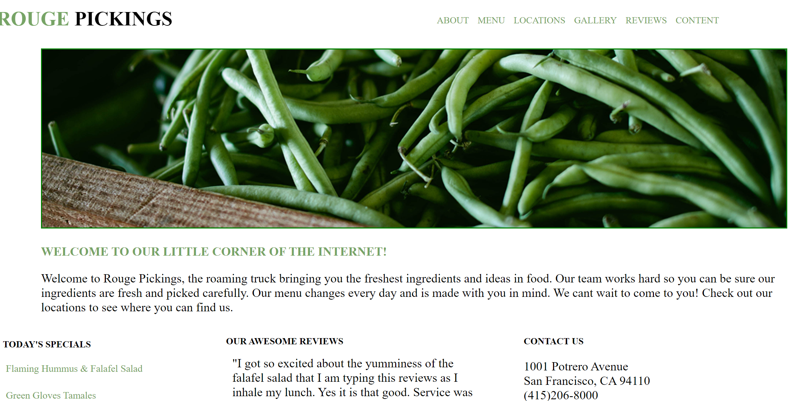
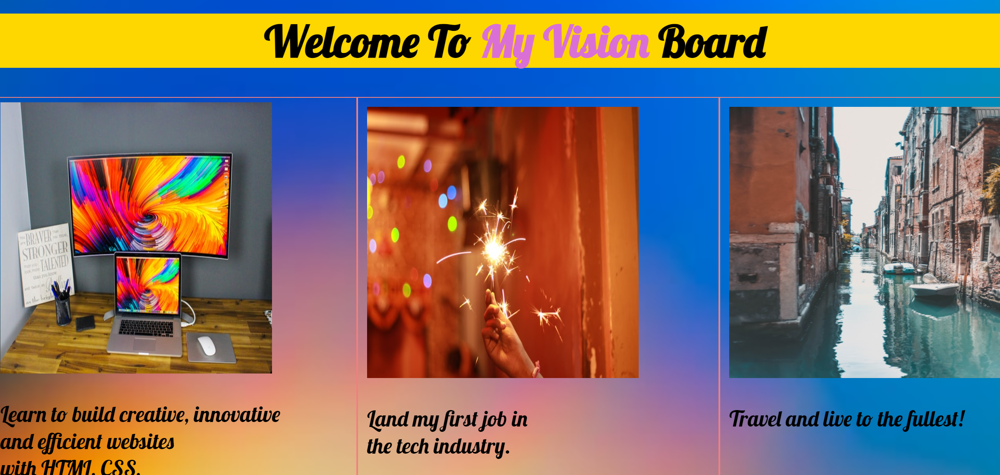
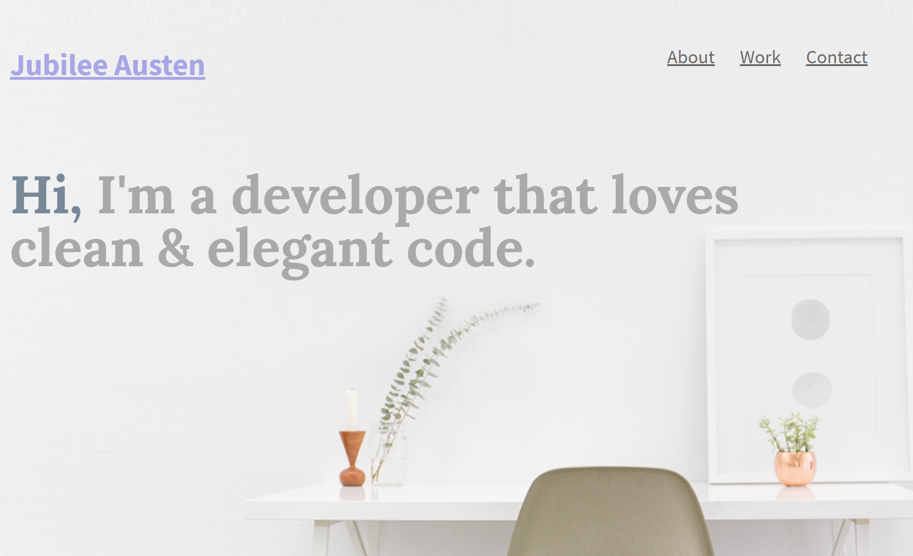
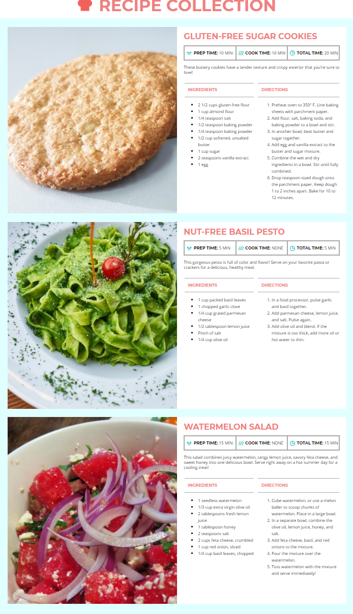

My Projects
 Rouge PickingsRouge Picking is a new restuarant in the San Francisco, California area. In this project I was expected to convert a PSD file into a live HTML website. HTML5 & CSS were used to create this website.
 My Vision BoardThis Vision Board was an optional bonus project with Skillcrush. I used HTML5 & CSS to build and customize this website for personal use.
 Jubilee AustenJubilee Austen is a prospective Front-end Developer who has built a portfolio website for future employers. Jubilee Austen is a design comp project I completed in my Skillcrush class. I recreated this PSD file using HTML5 & CSS.
 Recipe CardThis recipe card was an optional bonus project with Skillcrush to showcase our CSS skills and learn new properties. This project was completed using HTML5 & CSS.